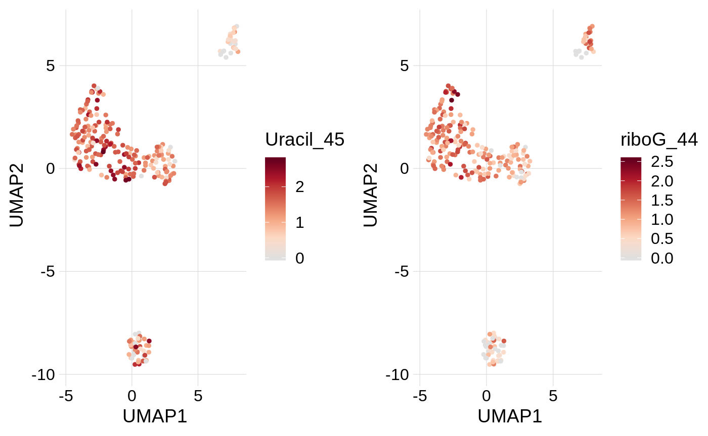
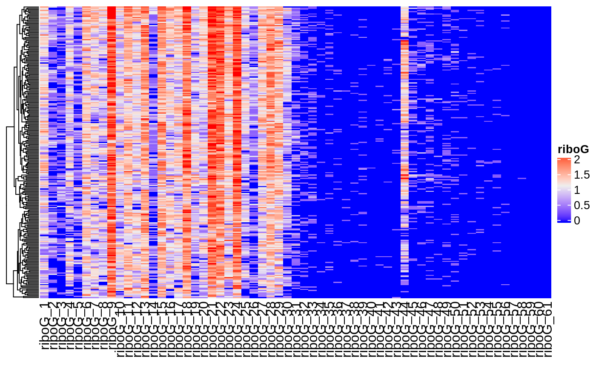

Create a Functional Single Cell Experiment (fsce)
library(scrunchy)
# this same object is available as `fsce_small` in the package.
fsce <- create_fsce(
list(
rnaseq = create_sce_rnaseq(scrunchy_data("mrna")),
haircut = create_sce_haircut(scrunchy_data("haircut"))
)
)
fsce## A FunctionalSingleCellExperiment object of 2 listed
## experiments with user-defined names and respective classes.
## Containing an ExperimentList class object of length 2:
## [1] rnaseq: SingleCellExperiment with 9479 rows and 250 columns
## [2] haircut: SingleCellExperiment with 426 rows and 250 columns
## Features:
## experiments() - obtain the ExperimentList instance
## colData() - the primary/phenotype DataFrame
## sampleMap() - the sample availability DataFrame
## `$`, `[`, `[[` - extract colData columns, subset, or experiment
## *Format() - convert into a long or wide DataFrame
## assays() - convert ExperimentList to a SimpleList of matricesfsce is an object of class FunctionalSingleCellExperiment, which can contain data from multiple modalities and does not require that each modality has the same number of cells or features.
## Loading required package: SummarizedExperiment## Loading required package: GenomicRanges## Loading required package: stats4## Loading required package: BiocGenerics## Loading required package: parallel##
## Attaching package: 'BiocGenerics'## The following objects are masked from 'package:parallel':
##
## clusterApply, clusterApplyLB, clusterCall, clusterEvalQ,
## clusterExport, clusterMap, parApply, parCapply, parLapply,
## parLapplyLB, parRapply, parSapply, parSapplyLB## The following object is masked from 'package:scrunchy':
##
## normalize## The following objects are masked from 'package:stats':
##
## IQR, mad, sd, var, xtabs## The following objects are masked from 'package:base':
##
## anyDuplicated, append, as.data.frame, basename, cbind,
## colMeans, colnames, colSums, dirname, do.call, duplicated,
## eval, evalq, Filter, Find, get, grep, grepl, intersect,
## is.unsorted, lapply, lengths, Map, mapply, match, mget, order,
## paste, pmax, pmax.int, pmin, pmin.int, Position, rank, rbind,
## Reduce, rowMeans, rownames, rowSums, sapply, setdiff, sort,
## table, tapply, union, unique, unsplit, which, which.max,
## which.min## Loading required package: S4Vectors##
## Attaching package: 'S4Vectors'## The following object is masked from 'package:base':
##
## expand.grid## Loading required package: IRanges## Loading required package: GenomeInfoDb## Loading required package: Biobase## Welcome to Bioconductor
##
## Vignettes contain introductory material; view with
## 'browseVignettes()'. To cite Bioconductor, see
## 'citation("Biobase")', and for packages 'citation("pkgname")'.## Loading required package: DelayedArray## Loading required package: matrixStats##
## Attaching package: 'matrixStats'## The following objects are masked from 'package:Biobase':
##
## anyMissing, rowMedians## Loading required package: BiocParallel##
## Attaching package: 'DelayedArray'## The following objects are masked from 'package:matrixStats':
##
## colMaxs, colMins, colRanges, rowMaxs, rowMins, rowRanges## The following objects are masked from 'package:base':
##
## aperm, apply## class: SingleCellExperiment
## dim: 9479 250
## metadata(0):
## assays(2): counts logcounts
## rownames(9479): FO538757.2 AP006222.2 ... AC004556.1 AC240274.1
## rowData names(0):
## colnames(250): TGCGGGTTCAACTCTT TGGTTCCTCCCAAGAT ...
## CTCGAAACACACTGCG TGACGGCAGAGTCGGT
## colData names(1): cell_id
## reducedDimNames(0):
## spikeNames(0):## 5 x 5 sparse Matrix of class "dgTMatrix"
## TGCGGGTTCAACTCTT TGGTTCCTCCCAAGAT CATATTCCATGCCCGA
## FO538757.2 . . .
## AP006222.2 . . .
## NOC2L . . .
## ISG15 . . .
## TNFRSF18 . . .
## TCACAAGTCTCCAACC GGACAAGAGCCCTAAT
## FO538757.2 1 .
## AP006222.2 . .
## NOC2L . .
## ISG15 . .
## TNFRSF18 . .## class: SingleCellExperiment
## dim: 426 250
## metadata(0):
## assays(2): counts logcounts
## rownames(426): Abasic_1 Abasic_10 ... riboG_8 riboG_9
## rowData names(2): hairpin position
## colnames(250): TGCGGGTTCAACTCTT TGGTTCCTCCCAAGAT ...
## CTCGAAACACACTGCG TGACGGCAGAGTCGGT
## colData names(1): cell_id
## reducedDimNames(0):
## spikeNames(0):## 5 x 5 sparse Matrix of class "dgTMatrix"
## TGCGGGTTCAACTCTT TGGTTCCTCCCAAGAT CATATTCCATGCCCGA
## Abasic_1 8 17 11
## Abasic_10 . . .
## Abasic_11 . . .
## Abasic_12 . . .
## Abasic_13 . 1 .
## TCACAAGTCTCCAACC GGACAAGAGCCCTAAT
## Abasic_1 7 18
## Abasic_10 . .
## Abasic_11 . .
## Abasic_12 . .
## Abasic_13 . .## DataFrame with 426 rows and 2 columns
## hairpin position
## <character> <character>
## Abasic_1 Abasic 1
## Abasic_10 Abasic 10
## Abasic_11 Abasic 11
## Abasic_12 Abasic 12
## Abasic_13 Abasic 13
## ... ... ...
## riboG_60 riboG 60
## riboG_61 riboG 61
## riboG_7 riboG 7
## riboG_8 riboG 8
## riboG_9 riboG 9# column annotations contain info about each row in the matrix,
# or about each unique cell present in any of the experiments
colData(fsce)## DataFrame with 250 rows and 1 column
## cell_id
## <character>
## TGCGGGTTCAACTCTT TGCGGGTTCAACTCTT
## TGGTTCCTCCCAAGAT TGGTTCCTCCCAAGAT
## CATATTCCATGCCCGA CATATTCCATGCCCGA
## TCACAAGTCTCCAACC TCACAAGTCTCCAACC
## GGACAAGAGCCCTAAT GGACAAGAGCCCTAAT
## ... ...
## CTACGTCCAGTGGAGT CTACGTCCAGTGGAGT
## TTAGGCACAGGTGGAT TTAGGCACAGGTGGAT
## AGCGTCGTCGTCGTTC AGCGTCGTCGTCGTTC
## CTCGAAACACACTGCG CTCGAAACACACTGCG
## TGACGGCAGAGTCGGT TGACGGCAGAGTCGGTNormalization
Normalized data is calculated by the create_ functions.
RNA data is log-normalized and scaled to total UMI count for each cell. Functional data is normalized using the center log ratio method used for CITE-seq analysis.
Normalized data is stored in the logcounts slot of each SingleCellExperiment object.
## TGCGGGTTCAACTCTT TGGTTCCTCCCAAGAT CATATTCCATGCCCGA
## Abasic_1 1.614359 2.1843851 1.931199
## Abasic_10 0.000000 0.0000000 0.000000
## Abasic_11 0.000000 0.0000000 0.000000
## Abasic_12 0.000000 0.0000000 0.000000
## Abasic_13 0.000000 0.3810593 0.000000Feature selection and PCA
# get variable genes
var_genes <- calc_var_features(fsce, n = 1000)
# calc PCA and embed in 2D
fsce <- calc_pca(fsce, n_pcs = 20, genes = var_genes)## scaling data## calculating pcsEmbed cells in 2D using UMAP or tSNE
Cell embeddings are stored in the reducedDims slot of the SingleCellExperiment and can be accessed as a named list.
## List of length 3
## names(3): PCA UMAP TSNE## [,1] [,2]
## TGCGGGTTCAACTCTT -0.7056742 -3.1788763
## TGGTTCCTCCCAAGAT 0.0289938 -3.8062140
## CATATTCCATGCCCGA 0.1522357 -0.9630351
## TCACAAGTCTCCAACC 4.5660902 -0.5486145Tidying data for analysis and plotting
Several tidy_ functions are provided to convert fsce into a tidy formate.
##
## Attaching package: 'dplyr'## The following object is masked from 'package:matrixStats':
##
## count## The following object is masked from 'package:Biobase':
##
## combine## The following objects are masked from 'package:GenomicRanges':
##
## intersect, setdiff, union## The following object is masked from 'package:GenomeInfoDb':
##
## intersect## The following objects are masked from 'package:IRanges':
##
## collapse, desc, intersect, setdiff, slice, union## The following objects are masked from 'package:S4Vectors':
##
## first, intersect, rename, setdiff, setequal, union## The following objects are masked from 'package:BiocGenerics':
##
## combine, intersect, setdiff, union## The following objects are masked from 'package:stats':
##
## filter, lag## The following objects are masked from 'package:base':
##
## intersect, setdiff, setequal, union##
## Attaching package: 'purrr'## The following object is masked from 'package:DelayedArray':
##
## simplify## The following object is masked from 'package:GenomicRanges':
##
## reduce## The following object is masked from 'package:IRanges':
##
## reducefsce_tidy <- purrr::reduce(
list(
tidy_dims(fsce_small) %>%
select(cell_id, starts_with("UMAP"), -experiment),
tidy_coldata(fsce_small),
tidy_logcounts(fsce_small[c("Uracil_45", "riboG_44"), , ]) %>%
select(-experiment)
),
left_join,
by = "cell_id"
)
fsce_tidy## # A tibble: 250 x 6
## cell_id UMAP1 UMAP2 k_cluster Uracil_45 riboG_44
## <chr> <dbl> <dbl> <chr> <dbl> <dbl>
## 1 TGCGGGTTCAACTCTT 1.53 2.75 6 1.39 1.61
## 2 TGGTTCCTCCCAAGAT 1.04 1.82 6 1.55 1.33
## 3 CATATTCCATGCCCGA 1.68 4.18 6 1.76 0.429
## 4 TCACAAGTCTCCAACC -2.72 2.56 6 0.418 0.418
## 5 GGACAAGAGCCCTAAT 0.945 3.07 6 2.09 1.46
## 6 CTTTGCGAGCAGGTCA 1.07 3.94 6 1.08 1.08
## 7 GTGCAGCAGTAGCCGA 2.25 1.55 6 2.32 1.59
## 8 AGCGGTCCAATAGAGT -2.55 -0.766 4 1.21 1.46
## 9 GGATGTTTCTCAAACG 1.30 2.09 6 1.49 0.400
## 10 GTACTCCTCGTTTAGG -4.90 2.47 5 1.50 0.405
## # … with 240 more rowsVisualization
Two-dimensional embeddings
Features can be visulized on a two-dimensional embedding with the plot_dims() function which will plot gene/function assay values.
cowplot::plot_grid(
plot_dims(fsce_tidy, UMAP1, UMAP2, Uracil_45, size = 1),
plot_dims(fsce_tidy, UMAP1, UMAP2, riboG_44, size = 1)
)
Functional activities
Activities can be visualized per-group with plot_actvitiy(). These two plots have uracil and ribonucleotide excision activities plotted per cluster (k-means, n = 6).
cowplot::plot_grid(
plot_activity(fsce_tidy, Uracil_45, k_cluster),
plot_activity(fsce_tidy, riboG_44, k_cluster)
)
Heatmap
These heatmaps show uracil and ribonucleotide excision activities for the U:A and riboG hairpins
mtx <- logcounts(fsce_small[["haircut"]])
rows <- paste("Uracil", 1:61, sep = "_")
plot_heatmap(mtx, rows, name = "Uracil")